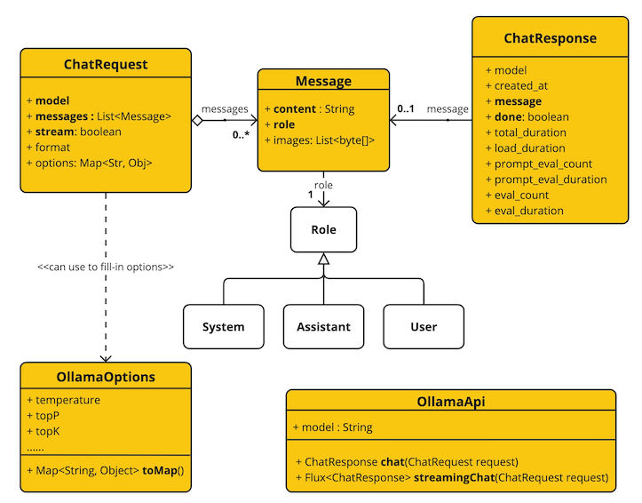

1. 启动ollama
-
docker pull ollama/ollama:0.1.28
docker run \
--name ollama \
-p 11434:11434 \
--privileged=true \
--net network-common \
-v /elf/ollama:/root/.ollama \
-itd ollama/ollama:0.1.282. Cpu运行llama2
docker exec -it ollama ollama run llama2
docker exec -it ollama ollama run llama2-chinese3. 测试模型
root@docker:/elf# docker exec -it ollama ollama run llama2
pulling manifest
pulling 8934d96d3f08... 100% ▕███████████████████████████████████████████████████████████████████████████████████████████████████████▏ 3.8 GB
pulling 8c17c2ebb0ea... 100% ▕███████████████████████████████████████████████████████████████████████████████████████████████████████▏ 7.0 KB
pulling 7c23fb36d801... 100% ▕███████████████████████████████████████████████████████████████████████████████████████████████████████▏ 4.8 KB
pulling 2e0493f67d0c... 100% ▕███████████████████████████████████████████████████████████████████████████████████████████████████████▏ 59 B
pulling fa304d675061... 100% ▕███████████████████████████████████████████████████████████████████████████████████████████████████████▏ 91 B
pulling 42ba7f8a01dd... 100% ▕███████████████████████████████████████████████████████████████████████████████████████████████████████▏ 557 B
verifying sha256 digest
writing manifest
removing any unused layers
success>>> hi
Hello! It's nice to meet you. Is there something
I can help you with or would you like to chat?>>> one plus one?
One plus one is equal to two.
>>> Send a message (/? for help)4. Prerequisite
-
用Ollama可在本地运行各种大型语言模型(LLM：Large Language Model)，
并从中生成文本，Spring AI支持OllamaChatClient生成Ollama文本； -
首先在本地机器运行Ollama，此处选择llama2库，将会下载约4G大小的镜像；
<dependency>
<groupId>org.springframework.ai</groupId>
<artifactId>spring-ai-ollama-spring-boot-starter</artifactId>
</dependency>5. Chat Option
-
启动时，可用OllamaChatClient(api,option)构造方法或
spring.ai.ollama.chat.options.*属性配置默认选项； -
运行时，可通过向Prompt调用添加新的、特定于请求的选项来覆盖默认选项，
如要覆盖特定请求的默认模型和温度： -
ChatOptions.java，OllamaOptions.java，ChatOptionsBuilder.java
6. 实际案例
<dependency>
<groupId>org.springframework.boot</groupId>
<artifactId>spring-boot-starter-web</artifactId>
</dependency>
<dependency>
<groupId>org.springframework.ai</groupId>
<artifactId>spring-ai-ollama-spring-boot-starter</artifactId>
</dependency>spring:
ai:
ollama:
base-url: http://192.168.0.123:11434
chat:
model: llama2
options:
temperature: 0.7
mvc:
async:
request-timeout: 60000import java.util.Map;
import org.springframework.ai.chat.ChatResponse;
import org.springframework.ai.chat.messages.UserMessage;
import org.springframework.ai.chat.prompt.Prompt;
import org.springframework.ai.ollama.OllamaChatClient;
import org.springframework.ai.ollama.api.OllamaOptions;
import org.springframework.web.bind.annotation.GetMapping;
import org.springframework.web.bind.annotation.RequestMapping;
import org.springframework.web.bind.annotation.RequestParam;
import org.springframework.web.bind.annotation.RestController;
import reactor.core.publisher.Flux;
@RequestMapping
@RestController
public class ChatController {
private final OllamaChatClient chatClient;
public ChatController(OllamaChatClient chatClient) {
this.chatClient = chatClient;
}
@GetMapping("/ai/prompt")
public ChatResponse generate1(@RequestParam(value = "message",
defaultValue = "Tell me a joke") String message) {
ChatResponse response = chatClient.call(
new Prompt(
"generate the names of 5 famous pirates.",
OllamaOptions.create()
.withModel("llama2")
.withTemperature(0.4f)
));
return response;
}
@GetMapping("/ai/generate")
public Map<String,String> generate(@RequestParam(value = "message",
defaultValue = "Tell me a joke") String message) {
return Map.of("generation", chatClient.call(message));
}
@GetMapping("/ai/generateStream")
public Flux<ChatResponse> generateStream(
@RequestParam(value = "message",defaultValue = "Tell me a joke") String message) {
Prompt prompt = new Prompt(new UserMessage(message));
return chatClient.stream(prompt);
}
}
import java.lang.invoke.MethodHandles;
import org.springframework.boot.SpringApplication;
import org.springframework.boot.autoconfigure.SpringBootApplication;
@SpringBootApplication
public class OllamaChatEntry {
public static void main(String[] sa) {
Class<?> cls = MethodHandles.lookup().lookupClass();
SpringApplication.run(cls, sa);
}
}8. Response
{
"result": {
"output": {
"content": "\nSure! Here are 5 famous pirates and their names:\n\n1. Blackbeard - born Edward Teach, was a notorious English pirate who operated in the Caribbean during the early 18th century.\n2. Captain Kidd - also known as William Kidd, was a Scottish sailor who turned to piracy in the late 17th and early 18th centuries. He is best known for his alleged treasure hoard, which has never been found.\n3. Calico Jack Rackham - born John Rackham, was an English pirate who operated in the Caribbean during the early 18th century. He is best known for having two female crew members, Anne Bonny and Mary Read, who disguised themselves as men to join his crew.\n4. Henry Morgan - was a Welsh pirate and privateer who operated in the Caribbean during the late 17th and early 18th centuries. He is best known for his raids on Spanish colonies and his eventual knighting by King Charles II.\n5. Bartholomew Roberts - born Bart Roberts, was a Welsh pirate who operated in the Caribbean during the early 18th century. He is considered one of the most successful pirates in history, with over 400 ships captured during his career.",
"properties": {},
"messageType": "ASSISTANT"
},
"metadata": {
"contentFilterMetadata": {
"promptTokens": 30,
"generationTokens": 299,
"totalTokens": 329
},
"finishReason": "unknown"
}
},
"results": [
{
"output": {
"content": "\nSure! Here are 5 famous pirates and their names:\n\n1. Blackbeard - born Edward Teach, was a notorious English pirate who operated in the Caribbean during the early 18th century.\n2. Captain Kidd - also known as William Kidd, was a Scottish sailor who turned to piracy in the late 17th and early 18th centuries. He is best known for his alleged treasure hoard, which has never been found.\n3. Calico Jack Rackham - born John Rackham, was an English pirate who operated in the Caribbean during the early 18th century. He is best known for having two female crew members, Anne Bonny and Mary Read, who disguised themselves as men to join his crew.\n4. Henry Morgan - was a Welsh pirate and privateer who operated in the Caribbean during the late 17th and early 18th centuries. He is best known for his raids on Spanish colonies and his eventual knighting by King Charles II.\n5. Bartholomew Roberts - born Bart Roberts, was a Welsh pirate who operated in the Caribbean during the early 18th century. He is considered one of the most successful pirates in history, with over 400 ships captured during his career.",
"properties": {},
"messageType": "ASSISTANT"
},
"metadata": {
"contentFilterMetadata": {
"promptTokens": 30,
"generationTokens": 299,
"totalTokens": 329
},
"finishReason": "unknown"
}
}
],
"metadata": {
"usage": {
"promptTokens": 0,
"generationTokens": 0,
"totalTokens": 0
},
"promptMetadata": [],
"rateLimit": {
"requestsRemaining": 0,
"tokensLimit": 0,
"requestsLimit": 0,
"requestsReset": "PT0S",
"tokensRemaining": 0,
"tokensReset": "PT0S"
}
}
}9. Low Level Client

-
OllamaApi
var ollamaApi = new OllamaApi("HOST:PORT");
// Sync request
var request = ChatRequest.builder("orca-mini")
.withStream(false)
.withMessages(List.of(
Message.builder(Role.SYSTEM)
.withContent("You are geography teacher. You are talking to a student.")
.build(),
Message.builder(Role.USER)
.withContent("What is the capital of Bulgaria and what is the size? "
+ "What it the national anthem?")
.build()))
.withOptions(OllamaOptions.create().withTemperature(0.9f))
.build();
ChatResponse response = ollamaApi.chat(request);
// Streaming request
var request2 = ChatRequest.builder("orca-mini")
.withStream(true)
.withMessages(List.of(Message.builder(Role.USER)
.withContent("What is the capital of Bulgaria and what is the size? "
+ "What it the national anthem?")
.build()))
.withOptions(OllamaOptions.create().withTemperature(0.9f).toMap())
.build();
Flux<ChatResponse> streamingResponse = ollamaApi.streamingChat(request2);